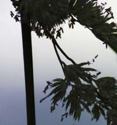
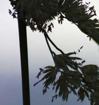

Saturday, June 19, 2004
Transcendental Etude IX

She'd found herself, of late, counterpoising the time before her birth with the time after her death. It was a strange exercise in parsing eternity that, for some odd reason, she found comforting. A mind game that she didn't dare deconstruct, for fear of unearthing its utter bad faith.
There was no doubt that, deny it as she might, she was looking for consolation. That she still harbored after all these hard boiled years a teeny tiny flame of theological optimism that, at the very last moment, a deus ex machina would arrive and solve, or better still, abolish the problem of mortality. She pictured Jesus descending in a Power and Light bucket truck, smiling in his hard hat, revealing that all that Heaven stuff was true after all. Or at least some temporal guru -- roshi, sensei, teacher, lama, priest -- would materialize and give her the one teaching or practice that would do the same: abolish death.
The funerary phrase echoed in her mind:
I am the resurrection and the life. He that believeth in me, though he were dead, yet shall he live.
Now how exactly does that work ? Her husband, dismissive and sardonic, claimed that this was the prize nugget of literal, personal immortality that drew people into the Christian fold. Eternal life. No death. You get to stay you forever. With all your friends and family. In Heaven, the proverbial far, far better place . The place of one's reward . She suspected that, at the bottom of her quest for transcendence, lay a primitive wish to continue as herself in perpetuity. The whole gnarly package -- lank hair, bundled neuroses, crinky neck, bad bones, stifled and raging appetites, propensity for melancholia, everything. How could it be otherwise ?
Self-love. Who would have thought it ? The word cried out for a German translation. Selbstliebe. Like some Freudian affliction. The French amour propre was too genteel. She thought of Erik Erikson, that old Eight Ages Of Man psychoanalytic nemesis of hers, each of whose developmental stages from basic trust vs. basic mistruct to ego integrity vs. despair she'd flunked, spectacularly. She'd been thinking, lately, of the last stage. The one she was approaching. If she ever, that is, got herself out of the muck of stagnation vs. generativity or where ever she'd been floundering these past few years.
Ego Integrity. The phrase pissed her off. It seemed so smug, so complacent, so self-satisfied. Like a room of carefully arranged trophies. Fetschrifts. Diplomas. Honoraria. The last piece of the jigsaw clicks into place. All one's oral rages and anal shamefulness successfully overcome. Inhibiting guilts and inferiority replaced by entrepreneurial and optimistic industry and competence. A proud and firm sense of identity flourishes in place of role confusion. Intimacy ("mutuality of orgasm with a loved partner of the other sex with whom one is able and willing to share a mutual trust and with whom one is able and willing to regulate the cycles of work, procreation and recreation so as to secure to the offspring, too, all the stages of a satisfactory development") is ascendent over bitter isolation. One is generative, productive, forward-moving not stagnant and fallow.
Then, finally, full of enough Ego Integrity (and blissfully unafflicted by its negative counterpart, despair) so as "not to fear death," one, well, dies.
Not to fear death ??? Did it really say that ?
The whole project struck her as some booster clubby extrovert's manifesto.
She arranged her failures on Dr Erikson's epigenetic staircase. Issues with food. Shame of her body. Shyness, withdrawal. Sexual conflict and ambiguity. Divorce. And, of all things, motherhood. Herself, a mother ? Unbelievable. Then medicine. What was she thinking when she signed onto that ? And poetry ? A failed dilletante. Religion ? Was there ever a bigger misfit ? Oddly enough, as she went though the familiar litany of self-grievance, it seemed more like gazing at old wallpaper than wrestling with despair. She thought of the early journals she'd written, full of discussions of these very things, yet full of anguish. Where was that anguish now ? Furthermore, she reflected, weren't some of the character traits that she had found useful in helping her understand and exist in the world -- ambivalence, restraint, modesty, even inhibition -- products of Eriksonian epigenetic failures ?
What was that Thomas Merton had written ?
Despair is the absolute extreme of self-love.
Was that not another way of putting the first two noble truths ? That life is suffering, and that suffering arises from clinging ?
Indeed.
But still, there it was. That nagging little selbstliebe that kept her stealing sidelong glances at the hard-hatted hunk in the bucket truck, wondering what in Heaven's name he meant by that wink.
Seedhead
Grass used to be, well, just grass. The green stuff around the house that Dad fussed over and mowed. The lawn. When I became a homeowner I found I was also a defacto lawnowner. Plus the proud owner of an oblong backyard filled with barkmulch. Determined to make good on our suburban obligations, we hired a gardener to install a back lawn. Twice. And then I, two dead lawns under my belt, and armed with a rake and a bag of seed, played sower. Flung handsfull of grass seed about, willy nilly, and dutifully hosed it down each morning and evening. A crop of frail blades emerged and were soon overcome by a burgeoning swathe of crabgrass.
So I gave up and bought a weed book. And began to study the natural ecology of our weed lawn. Left to its own devices, the back yard greens. Crabgrass, clover, yellow wood sorrell, bedstraws, speedwells, madders, nutsedge and, later, spurge all appear. Plus dandelions, hawkweed, poorman's pepper, shepherd's purse, swallow wort, chicory -- all sorts of interesting little plants, little niches, a patchwork of derelict flora.
Fred, across the street, put in a lawn this year. Replaced the dusty, half-green patch where he used to park his car. Within a week his threadbare dirt patch became a lush emerald swathe. Our sidefence neighbor, former owner of a child-betrodden, toy-strewn dirt-and-mudflat backyard, put in a lawn, seemingly overnight. Lush, green, landscaped. The first we knew about it was a note, taped to our back door, which said, basically, Ahem well hello would you kindly cut down your maple trees which cause us no end of shade, mold, rot and mildew.
Later today, soon in fact, I have to mow my weedlawn. A neighborly obligation. I keep my weedlawn tidy. I do spare interesting plants and plant clumps. I have no interest in cutting down maple trees or obtaining my own emerald sward. I would have to hire a gardener. Men with machines and poisons. An army. To protect my lawn. Nah. There are enough battles in the world.
At the river, the grass is ascendant. Magnificent. Prolific, prodigal, carzily diverse. Seedheads -- or, latinately, inflorescences -- sprout the most extravagant sexual doohickeys, and toss back and forth in the wind and sun. (My botanic vocabulary is not what it might be.) I look, and look, and look, never tiring of the wild display. Grasses, flaunting and disseminating and inseminating. And between them, flowers. Wildflowers, weeds. Rushes, sedges. The meadow renews itself. There are technical words for all these parts, these flowers and stems ans seeds and leaves -- and each plant has a name. Has two -- common, and latin, low church and high church. Like our beautiful language, English, that saxon and latin chimera. Seed head, inflorescence. Grass. Panicum. Poaceae. Agrostis. I think of the millions of poems in the world. Poems written, read, poems fertilizing the brainbeds from which other poems grow, poet to poet, generations of poems -- and suddenly the world's surfeit of poems that once dismayed me by its sheer size, delights me, delights me as a meadow does, succeeding itself year after year.
See ?





So I gave up and bought a weed book. And began to study the natural ecology of our weed lawn. Left to its own devices, the back yard greens. Crabgrass, clover, yellow wood sorrell, bedstraws, speedwells, madders, nutsedge and, later, spurge all appear. Plus dandelions, hawkweed, poorman's pepper, shepherd's purse, swallow wort, chicory -- all sorts of interesting little plants, little niches, a patchwork of derelict flora.
Fred, across the street, put in a lawn this year. Replaced the dusty, half-green patch where he used to park his car. Within a week his threadbare dirt patch became a lush emerald swathe. Our sidefence neighbor, former owner of a child-betrodden, toy-strewn dirt-and-mudflat backyard, put in a lawn, seemingly overnight. Lush, green, landscaped. The first we knew about it was a note, taped to our back door, which said, basically, Ahem well hello would you kindly cut down your maple trees which cause us no end of shade, mold, rot and mildew.
Later today, soon in fact, I have to mow my weedlawn. A neighborly obligation. I keep my weedlawn tidy. I do spare interesting plants and plant clumps. I have no interest in cutting down maple trees or obtaining my own emerald sward. I would have to hire a gardener. Men with machines and poisons. An army. To protect my lawn. Nah. There are enough battles in the world.
At the river, the grass is ascendant. Magnificent. Prolific, prodigal, carzily diverse. Seedheads -- or, latinately, inflorescences -- sprout the most extravagant sexual doohickeys, and toss back and forth in the wind and sun. (My botanic vocabulary is not what it might be.) I look, and look, and look, never tiring of the wild display. Grasses, flaunting and disseminating and inseminating. And between them, flowers. Wildflowers, weeds. Rushes, sedges. The meadow renews itself. There are technical words for all these parts, these flowers and stems ans seeds and leaves -- and each plant has a name. Has two -- common, and latin, low church and high church. Like our beautiful language, English, that saxon and latin chimera. Seed head, inflorescence. Grass. Panicum. Poaceae. Agrostis. I think of the millions of poems in the world. Poems written, read, poems fertilizing the brainbeds from which other poems grow, poet to poet, generations of poems -- and suddenly the world's surfeit of poems that once dismayed me by its sheer size, delights me, delights me as a meadow does, succeeding itself year after year.
See ?

Thursday, June 17, 2004
Wild Garlic Struts Its Stuff
I've finally identified the flame- shaped plant that I've been admiring: wild garlic. The pods have opened, revealing beautiful pearly white spheres, from which tiny blue flowers cantilever.
Amazing.


Amazing.
Sunday, June 13, 2004
Earthly Delights 3

Bamboo
Blue-Eyed Grass

Cinquefoil

Downy Brome Seedhead
Baby Queen Anne's Lace

Daisy

Dame's Rocket
Fleabane

Fringed Sedge
Hop Clover

Maple Leaf Gall

Bindweed

Red Clover
Rosa Multiflora
Sheep Sorrel
Smartweed
Soft Rush

Tower Mustard

Whorled Loosestrife
WILD GARLIC !!!

Yarrow